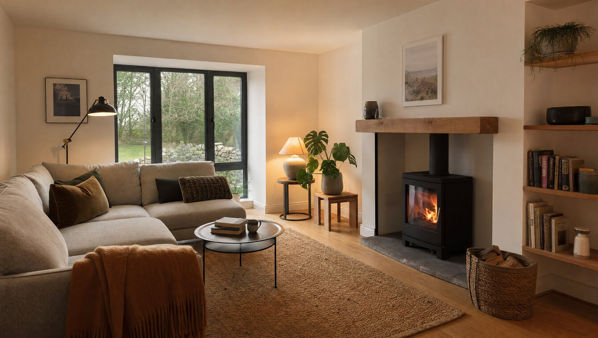
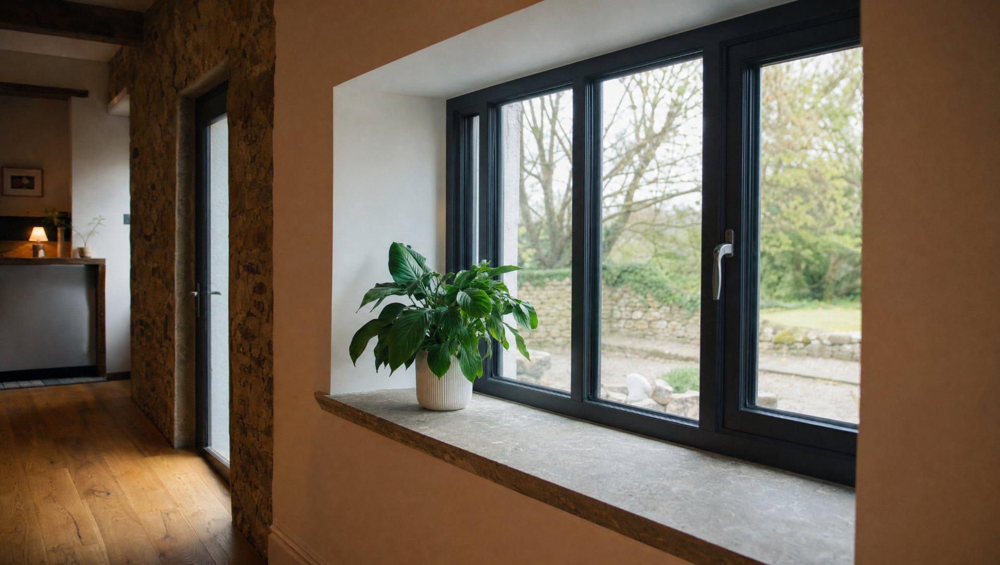
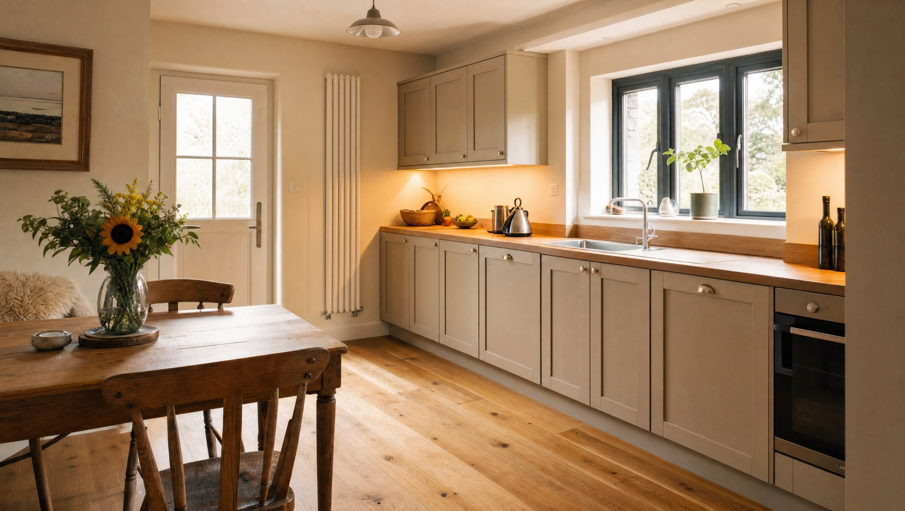

Before & After
From cold and dated to warm and efficient.
Drag the handle to see the same house before and after a deep retrofit — new render, windows, solar and a heat pump. Illustrative of the type of work — not a specific project.
The Story
What a deep retrofit involves.
This is the kind of house a retrofit is made for — a well-loved older Cork home that’s simply cold and expensive to heat: single or early double glazing, little or no insulation, and an oil boiler doing its best against draughty walls.
A deep retrofit tackles the whole fabric as a set of measures that work together — wall and attic insulation, airtightness, triple-glazed windows and doors, solar panels, and a heat pump in place of the old boiler. The house holds its heat, runs on far less energy, and feels warm and quiet in a way it never did before.
We handle it all with one in-house team — survey and design, the insulation and glazing, then the renewables and the making-good throughout — so there’s one plan and one point of contact from the first assessment to the final commissioning.
Grant support is available for many of these measures. We work alongside a registered grant agent who handles the grant side, so we can point you in the right direction — the grants themselves are administered by the SEAI. It’s the same approach behind every retrofit we take on across Cork.
Key Details
What’s typically involved.
- Service — Deep energy retrofit
- Location — Cork
- Wall and attic insulation
- Airtightness and draught-proofing
- Triple-glazed windows and doors
- Solar PV panels
- Heat pump in place of the oil boiler
- Making-good and finishes throughout
This is a representative outline of the measures a deep retrofit can include — every house is assessed first, so the right combination of measures, the grant routes and the figures are set per project. Grants are administered by the SEAI and handled with a registered grant agent.
Inside
Warm, quiet and comfortable.



Illustrative of a deep retrofit across Cork — representative of the work, not a specific project.
Ready to start?
Answer three quick questions and we’ll be in touch.